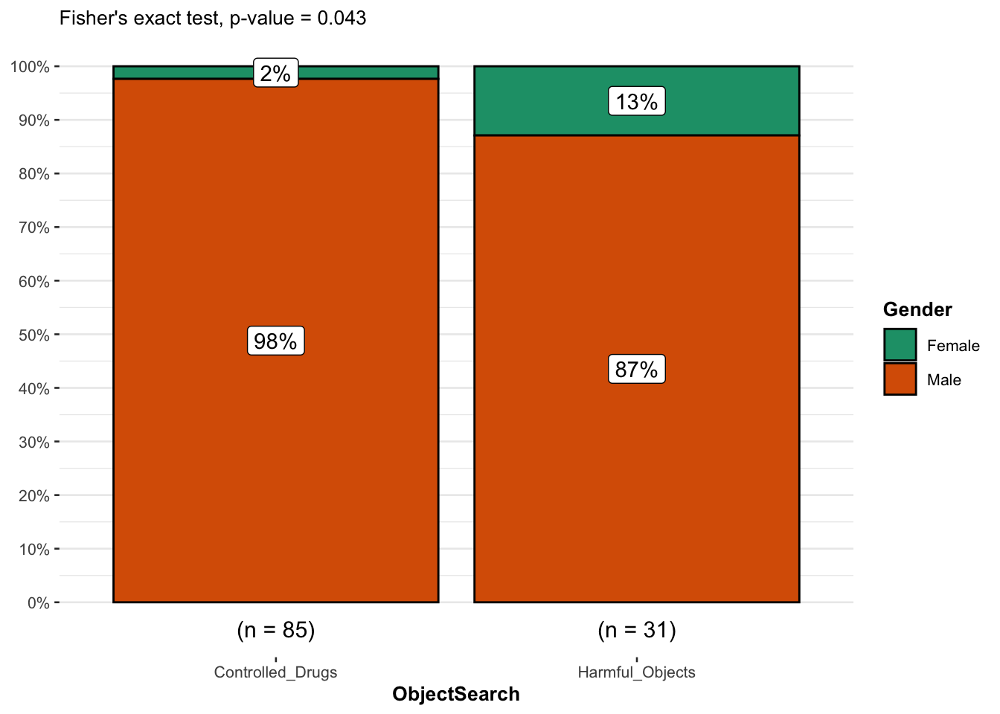

Explaining Fisher’s Exact Test, how to run it in R and it’s interpretation.
Authors
Tendai Gwanzura
Ana Bravo
Introduction
Fisher’s exact test is an independent test used to determine if there is a relationship between categorical (non-parametric) variables with a small sample size.
Used to assess whether proportions of one variable are different among values of another table.
Uses (hypergeometric) marginal distribution to derive exact p-values which are not approximated, which are also somewhat conservative.
The rules of Chi distribution do not apply when the frequency count is <5 for more than 20% of the cells in a contingency table (Bower 2003).
Data is easily manipulated by using a contingency table.
Assumptions
Assumes that the individual observations are independent.
Assumes that the row and column totals are fixed or conditioned.
The variables are categorical and randomly sampled.
Observations are count data.
Hypotheses
The hypotheses of Fisher’s exact test are similar to Chi-square test:
Null hypothesis:\((H_0)\) There is no relationship between the categorical variables, the variables are independent.
Alternative hypothesis: \((H_1)\) There is a relationship between the categorical variables, the variables are dependent.
Fisher’s Exact Test Equation
Fisher’s exact test for a one-tailed p-value is calculated using the following formula:
\[ p = {(a+b)!(c+d)!(a+c)!(b+d)! \over a! b! c! d! n!} \] - n = population size/ total frequency
- a + b = “successes” values in the contingency table
- a + c = sample size / draws from the population
- a = sample successes
Formula description
this test is usually used as a one-tailed test but it can also be used as a two tailed test as well, \(a\),\(b\),\(c\), and \(d\) are the individual frequencies on the 2x2 contingency table and \(n\) is our total frequency. This particular test is used to obtain the probability of the combination of frequencies that we can actually obtain.
What is a contingency table?
This is a table that shows the distribution of a variable in the rows and columns. Sometimes referred to as a 2x2 table. They are useful in summarizing categorical variables. The table() function is used to create a contingency table in R. When the variables of interest are summarized in a contingency table it is easier to run the Fisher’s Exact test.
Example: Creating a contingency table
Lets say we have information on the gender of participants in a clinical trial and the type of drug administered to them we can create the following contingency table for further analysis.
# Example R code to create a contingency table# Creating a data frame df <-data.frame("Drug"=c("Drug A", "Drug B", "Drug A"),"Gender"=c("Male", "Male", "Female") )# Creating contingency table using table()ctable <-table(df)print(ctable)
Gender
Drug Female Male
Drug A 1 1
Drug B 0 1
Performing Fisher’s Exact Test in R
We will need to install the ggstatplot package to visualize the statistical results.
For this example we will be using the Greater Manchester Police’s UK stop and search data from 2017(December) sourced from the Sage Research Methods Dataset Part 2 (https://methods.sagepub.com/dataset/fishers-exact-gmss-2017). This data has information on stop and search events, gender and ethnicity. For this example we would like to access whether there is a significant relationship between gender and stop and search events (having controlled drugs vs harmful weapons)?
# Exclude rows that have missing data in both variablesnewGMP17_nom <-subset(newGMP17, Gender >0)newGMP17_nom2 <-subset(newGMP17_nom, ObjectSearch >0)summary(newGMP17_nom2)
Gender ObjectSearch
Min. :1.000 Min. :1.000
1st Qu.:1.000 1st Qu.:1.000
Median :1.000 Median :1.000
Mean :1.052 Mean :1.267
3rd Qu.:1.000 3rd Qu.:2.000
Max. :2.000 Max. :2.000
nrow(newGMP17_nom2)
[1] 116
# Renaming the Gender variable based on data dictionarynewGMP17_nom2$Gender <-recode_factor( newGMP17_nom2$Gender,"1"="Male","2"="Female")# Renaming the Gender variable based on data dictionarynewGMP17_nom2$ObjectSearch <-recode_factor( newGMP17_nom2$ObjectSearch,"1"="Controlled_Drugs","2"="Harmful_Objects")
# Creating the contingency table for subset datacGMP17 =table(newGMP17_nom2)print(cGMP17)
ObjectSearch
Gender Controlled_Drugs Harmful_Objects
Male 83 27
Female 2 4
Running the Fisher’s exact test using fisher.test()
What if we just run a Chi-square test?
Using our GMP17 dataset we can try to run a Chi-square test instead of the Fisher’s Exact test and see what happens.
The R output gives us a warning that the Chi Square is not appropriate hence we should use another test in this case the Fisher’s Exact Test.
chisq.test(cGMP17)$expected
Warning in chisq.test(cGMP17): Chi-squared approximation may be incorrect
ObjectSearch
Gender Controlled_Drugs Harmful_Objects
Male 80.603448 29.396552
Female 4.396552 1.603448
Running the test
# running the fisher's exact testtest <-fisher.test(cGMP17)test
Fisher's Exact Test for Count Data
data: cGMP17
p-value = 0.04297
alternative hypothesis: true odds ratio is not equal to 1
95 percent confidence interval:
0.8133673 70.2637501
sample estimates:
odds ratio
6.030297
The most important test statistic is the p - value therefore we can retrieve the specific result using the following code;
test$p.value
[1] 0.04297268
Odds ratio = 6.33, 95% CI = 0.85-73.59], we reject the null hypothesis (p < 0.05) and conclude that there is a strong association between the two categorical independent variables (gender and object search events)
Therefore the odds ratio indicates that the odds of having controlled drugs at a stop and search is 6.33 times as likely for males compared to females. In other words, males are more likely of having controlled drugs at a stop and search than females.
Visualizing statistical results with plots using ggstatsplot
we download the ggsattsplot package to visualize the results in a plot.
# Fisher's exact test test <-fisher.test(cGMP17)# combine plot and statistical test with ggbarstatsggbarstats( newGMP17_nom2, Gender, ObjectSearch,results.subtitle =FALSE,subtitle =paste0("Fisher's exact test", ", p-value = ",ifelse(test$p.value <0.001, "< 0.001", round(test$p.value, 3)) ))

From the plot, it is clear that the proportion of males among object search events is higher compared to females, suggesting that there is a relationship between the two variables.
This is confirmed thanks to the p-value displayed in the subtitle of the plot. As previously, we reject the null hypothesis and we conclude that the variables gender and stop and search events are not independent (p-value = 0.038).
What if we have more than two levels?
Using the drug example used previously lets say we have 3 drugs ‘Drug A, Drug B or Drug C’ and we want to see if there is any relationship with gender ‘Male/Female’.
# Creating a data framedf <-data.frame ("Drug"=c("Drug A", "Drug B", "Drug A", "Drug C", "Drug C"),"Gender"=c("Male", "Male", "Female", "Female", "Female"))# Creating contingency table using table()ctable <-table(df)print(ctable)
Gender
Drug Female Male
Drug A 1 1
Drug B 0 1
Drug C 2 0
# Running the Fisher's Exact test for the 3x2 tablefisher.test(ctable)
Fisher's Exact Test for Count Data
data: ctable
p-value = 0.6
alternative hypothesis: two.sided
The p-value is non-significant [p = 0.6], we fail to reject the null hypothesis (p < 0.05) and conclude that there is no association between the drug treatments and gender. If the results had been significant we would have gone ahead and conducted a post hoc analysis using pairwise_fisher_test to asses each combination.
Summary
This article describe the assumptions and hypotheses of the Fisher’s Exact test. It also provides examples on how it can be applied.
References
Bower, Keith M. 2003. “When to Use Fisher’s Exact Test.” In American Society for Quality, Six Sigma Forum Magazine, 2:35–37. 4.
McCrum-Gardner, Evie. 2008. “Which Is the Correct Statistical Test to Use?” British Journal of Oral and Maxillofacial Surgery 46 (1): 38–41.
Patil, I. (2021). Visualizations with statistical details: The ‘ggstatsplot’ approach. Journal of Open Source Software, 6(61), 3167, doi:10.21105/joss.03167